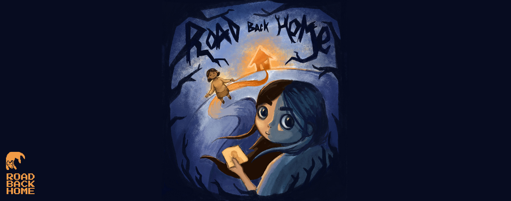
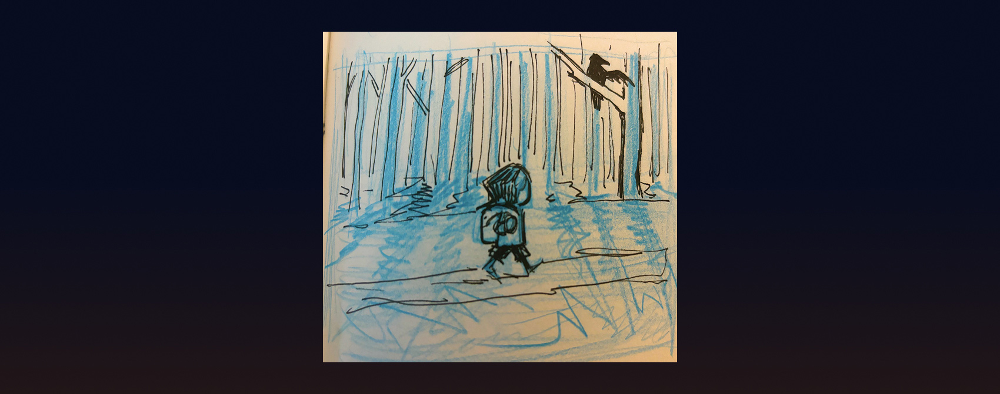
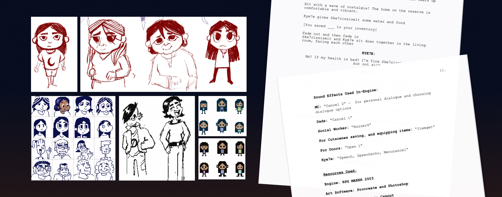
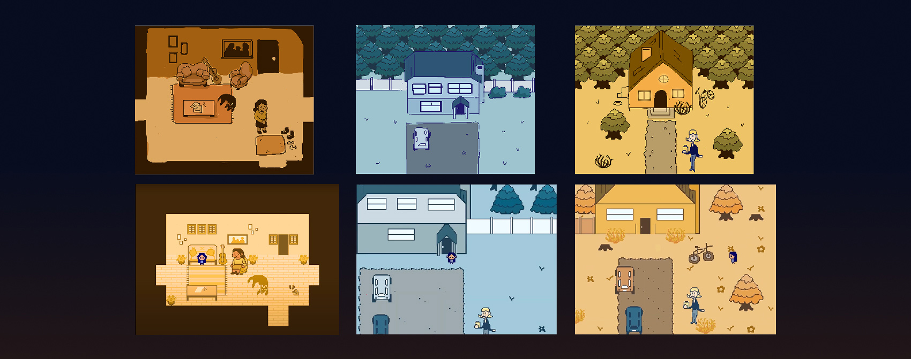
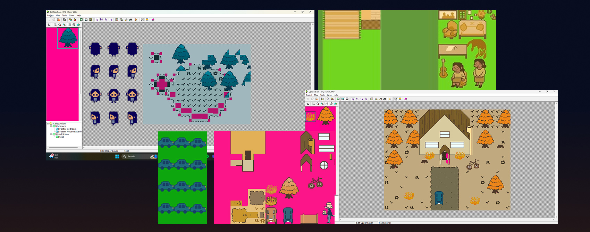
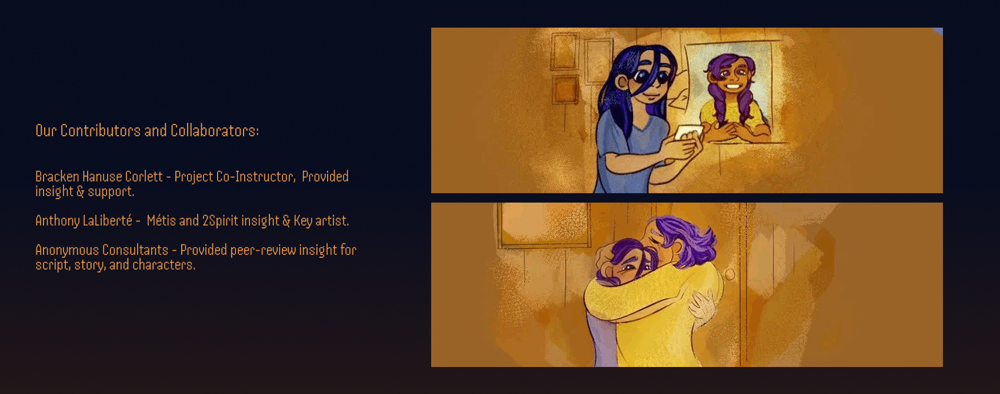
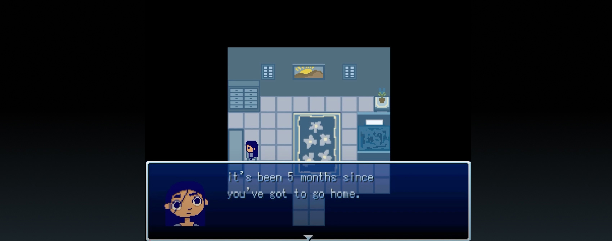
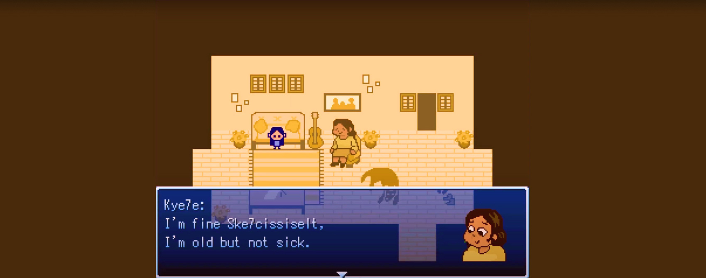
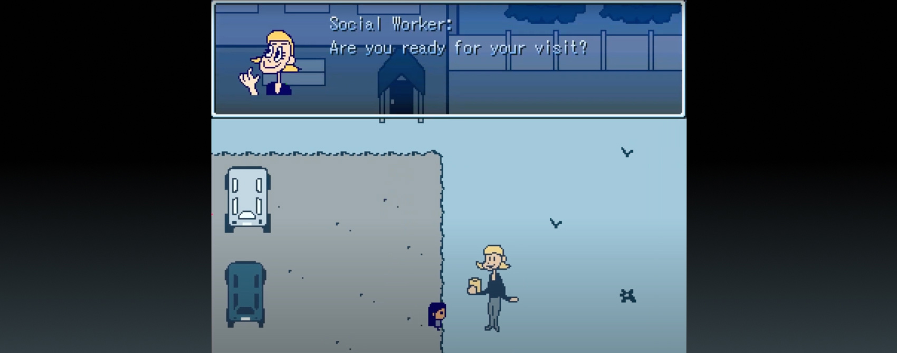

Tools Used:
• RPG MAKER 2003 • Photoshop • Figma
Awards:
• The Road Back Home - Applied Arts • The Road Back Home - RGD Awards • The Road Back Home - 2024 Salazar Student Awards - Interactive/UX/UI


The mission of 'The Road Back Home' is to spread awareness on the and Reconciliation Commission’s 94 Calls to Action, more specifically calls to Action 1, 4 and 5 which focus on Child Welfare for Indigenous children.

Our designed choices were guided through our demo script, which the environments and emotional storytelling. We aim to continue our story and script with help from collaborators in order to portray this current issue the best way possible.

Sketches done for the scenes in procreate which I later finalised in RPGMAKER.

For creating the scenes, we had to use sprite sheets made in photoshop.

(Caption) Our Contributors and Collaborators: Bracken Hanuse Corlett - Project Co-Instructor, Provided insight & support. Anthony LaLiberté - Métis and 2Spirited Key artist. Anonymous Consultants - Provided peer-review insight for script, story, and characters.



Screens from the demo.